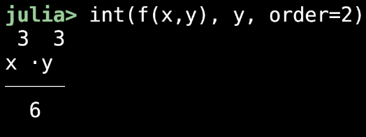

Jellyfish is aiming to be a all-in-one symbolic and numeric computing environment, specifically geared towards physics. The aim is to bridge the gap between the speed and ease of use of CAS tools, and the versatility and performance of conventional programming languages. Jellyfish currently exists as a Julia package, but many of the functions support Python interoperability, so you are able to use this package with JuliaPy. A proper compiled Python package is on the way.
Use the @sym macro to define a variable as a symbol/Sym. This will make the variable usable for symbolic mathematics.
using Jellyfish
@sym x,ySymbolic functions work with symbolic inputs, eg. for a native function f pass f(x) as the input where x is a Sym. Numeric functions work with numeric inputs, so you can pass f directly, without a need to use @sym anywhere. Most Numeric functions are also Symbolic.
f(x) = x^2
dif(f(x)) # dif() is Symbolic
nsolve(f) # nsolve() is both Numeric...
nsolve(f(x)) # ...and SymbolicSymbolic outputs are pretty formatted when printing the result.
This does not have an effect on their usability. They can be saved to variables and called as a symbolic expression as usual.
If you need physical constants to work with you can import them from physconst().
c = physconst("c")You can now start your computing adventure, powered by the objectively coolest aquatic animal.
solve(eq, var) - Symbolic
Solves an n-dimensional system of equations eq with respect to var symbolically.
eq Symbolic callable or tuple of symbolic callables
var Any Sym or tuple of Syms equal in length or shorter than eq
@sym x
solve(x-1)Dict{SymPyCore.Sym{PyCall.PyObject}, SymPyCore.Sym{PyCall.PyObject}} with 1 entry:
x => 1@sym x,y
solve((x+y-1, x-0.5))[y]
0.500000000000000@sym e,m,c
solve((e-m*c^2, c-physconst("c")), (m,c))1-element Vector{Tuple{SymPyCore.Sym{PyCall.PyObject}, SymPyCore.Sym{PyCall.PyObject}}}:
(1.11265005605362e-17*e, 299792458.000000)Transcendental function can currently be solved, although the output is difficult to read and parse
Many hours were spent causing segfaults, until it was discovered that PyJulia's garbage collector clears global variables making domain solving impossible with the planned implementation.
nsolve(func; estimate, iterations) - Numeric, Symbolic
Numerically finds a root of func \(: \mathbb R \rightarrow \mathbb R\) using the Newton-Raphson method with estimate as a starting guess and iterations iterations.
func - any continuous callable taking 1 Number and returning 1 Number
estimate - any Number - optional (default = 0)
iterations - any Int - optional (default = 10)
Numeric
f(x) = x-1
nsolve(f)1.0@sym x
nsolve(x^2-3)1.7320508075688774@sym x
nsolve(x^2, estimate=0.01, iterations=15)3.0517578125e-7I initially wrote it from memory, having heard of Newton's method 2 years ago, the result was a solver that only worked for strictly growing/shrinking functions. It's still included in the package as Jellyfish.reallybadsolver().
dif(func; var, order) - Symbolic
Computes the order'th order partial derivative of a callable func \(: \mathbb R^n \rightarrow \mathbb R^n\) with respect to var using symbolic differentiation.
func - any symbolic differentiable callable
var - any Sym - optional for functions defined in \(\mathbb R\)
order - any Number
@sym x
dif(sin(x))cos(x)
@sym x,y
f(x,y) = y*x^3
dif(f(x,y), x, order=2)6⋅x⋅ydiff(), this apparently conflicted with Base.diff(). At least it's similar to int() now.
int(func; var, lims, order) - Symbolic
Computes the order'th order integral from lims[1] to lims[2] of a function func \(: \mathbb R^n \rightarrow \mathbb R\) with respect to var using symbolic integration.
func - any symbolic callable where the set of discontinuities have measure 0
var - any Sym - optional for functions defined in \(\mathbb R\)
lims - any Tuple{Number, Number} - optional (if not specified the indefinite integral will be computed)
order - any Number - optional (default=1)
@sym x
int(x) 2
x
──
2 @sym x,y
f(x,y) = y*x^3
int(f(x,y), y, order=2) 3 3
x ⋅y
─────
6 tpoly(func, var; order, point) - Numeric, Symbolic
Computes the orderth order Taylor polynomial of func around point with respect to var.
func - any callable
var - any Sym - optional, required if func is symbolic
order - any Int - optional (default = 1)
point - any Number - optional (default = 0)
Numeric
f(x) = sin(x)
tpoly(f)1.0⋅_xSymbolic
@sym x
tpoly(exp(x))x + 1@sym x,y
tpoly(exp(x*y), y, order=2, point=π) 2 2 π⋅x
x ⋅(y - π) ⋅ℯ π⋅x π⋅x
──────────────── + x⋅(y - π)⋅ℯ + ℯ
2 This one was very helpful in my Linear Algebra and Analysis exam.
If func is a native Julia function the taylor polynomial is computed with TaylorSeries.jl. If it's a symbolic expression it is computed by Jellyfish directly.
nsolve(func; estimate, iterations) - Numeric, Symbolic
Numerically finds a root of func \(: \mathbb R \rightarrow \mathbb R\) using the Newton-Raphson method with estimate as a starting guess and iterations iterations.
func - any continuous callable taking 1 Number and returning 1 Number
estimate - any Number - optional (default = 0)
iterations - any Int - optional (default = 10)
Numeric
f(x) = x-1
nsolve(f)1.0Symbolic
@sym x
nsolve(x^2-3)1.7320508075688774@sym x
nsolve(x^2, estimate=0.01, iterations=15)3.0517578125e-7I initially wrote it from memory, having heard of Newton's method 2 years ago, the result was a solver that only worked for strictly growing/shrinking functions. It's still included in the package as Jellyfish.reallybadsolver().
nlim(func, dest, dir) - Numeric, Symbolic
Computes the limit of a function func \(: \mathbb R \rightarrow \mathbb R^n\) approaching dest from dir numerically using Richardson Extrapolation.
func - any callable taking 1 Number and returning 1 Number
dest - any Number
dir - the + or - function - optional (default +)
Numeric
f(x) = 1/x
nlim(f, Inf)0.0Symbolic
@sym x
nlim(1/x-1, 1)-2.0381780846385115e-15@sym x
nlim(-x^2 - 2, 2, dir=+)-6.0This function is a wrapper of Richardson.extrapolate from Richardson.jl
There is currently no system to detect when the limit approaches infinity, make sure to sanity check before using the result. Values that are close to 0 or very large are usually an indicator of an infinite limit.
dot(v, u) - Numeric, Symbolic
Computes the dot product of vectors or vector fields v and u : \(\mathbb{R}^n \rightarrow \mathbb{R}^n\).
v any Vector of Numbers and Syms
u any Vector of Numbers and Syms
@sym x
dot([1, 2], [3, x])2⋅x + 3cross(v, u) - Numeric, Symbolic
Computes the cross product of two 2D or 3D vectors or vector fields v and u : \(\mathbb{R}^{\{2,3\}} \rightarrow \mathbb{R}^{\{2,3\}}\).
v any Vector of Numbers and Syms
u any Vector of Numbers and Syms
@sym x
cross([1, 2], [3, x])3-element Vector{SymPyCore.Sym{PyCall.PyObject}}:
0
0
x - 6@sym x
cross([1, 2, π], [3, x, x^2])3-element Vector{SymPyCore.Sym{PyCall.PyObject}}:
2.0*x^2 - 3.14159265358979*x
9.42477796076938 - 1.0*x^2
1.0⋅x - 6.0polar(vec) - Numeric, Symbolic
Converts a cartesian vector or vector field vec : \(\mathbb{R}^2 \rightarrow \mathbb{R}^2\) to a polar vector. Returns a Tuple, consisting of the magnitude and angle respectively.
vec 2-element Vector of Numbers and Syms
polar([3, 4])(3.605551275463989, 0.6435011087932844)@sym x
polar([3*x, x])(sqrt(9*x^2 + x), atan(3))grad(field, var, order) - Symbolic
Computes the order'th order gradient of a scalar field field\(: \mathbb{R}^n \rightarrow \mathbb{R}\) with respect to var.
field Differentiable callable with 1 or more inputs and 1 output
var Vector of Syms of same length as field, optional (default: collects free symbols automatically)
order Any Number, optional (default: 1)
@sym x,y
f(x,y) = x^2 + x*y
grad(f(x,y))2-element Vector{Any}:
2⋅x + y
x
@sym x,y
grad(exp(y) * x^2, [x,y], order=2)2-element Vector{Any}:
2*exp(y)
x^2*exp(y)
divg(field, var) - Symbolic
Computes the divergence of a vector field field\(: \mathbb{R}^n \rightarrow \mathbb{R}^n\) with respect to var
field Vector of differentiable symbolic callables
var Vector of variables, must have same length as field
@sym x,y
divg([y*x^2, x*y^2], [x,y])4⋅x⋅ycurl(field, var) - Symbolic
Computes the curl of a 2D or 3D vector field field\(: \mathbb{R}^{[2; 3]} \rightarrow \mathbb{R}^{[2; 3]}\) with respect to var
field Vector of differentiable symbolic callables
var Vector of variables, must have same length as field
@sym x,y,z
curl([y*x^2, x*y^2, z^y], [x,y,z])3-element Vector{SymPyCore.Sym{PyCall.PyObject}}:
z^y*log(z)
0
-x^2 + y^2Documentation for this section is unfinished, propsem and chisq remain.
sem(σ, n) - Numeric
Computes the standard error on the mean given a standard deviation σ and sample size n.
σ Any Number
n Any Number
sem(3, 10)0.9486832980505138zscore(x, μ, σ) - Numeric
Computes how many standard deviations x is from the mean μ given a standard deviation σ.
x Any Number
μ Any Number
σ Any Number
zscore(3, 2, 1.5)0.6666666666666666physconst(name)
Gets the CODATA 2022 recommended value of a physical constant corresponding to name.
name Constant name, provided as a String
physconst("G_0")7.7480917299e-5